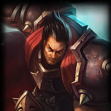
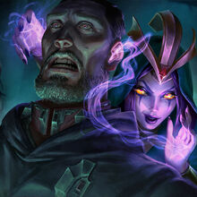
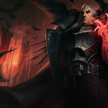
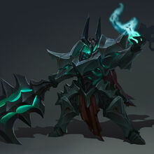

Imperio de Noxus
Un imperio expansionista forjado de las cenicas de otro imperio destruido, cuyo lider fue tan temido, que aun hoy en dia se teme que vuelva a resurgir, tomando el control del mundo. Antiguamente eran gobernados por un emperador, pero la corrupcion de una organizacion conocida como La Rosa Negra hizo que un gran general de Noxus iniciase una revolucion e implantara La Trifarix, un sistema de gobierno que dibidia los 3 poderes en 3 persona diferentes, ninguno seria mas que otro y se valoraria la fuerza sobre todo lo demas.
Algunos de los campeones mas importantes de Noxus son:
|  |  |  |  |
|---|